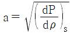
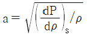
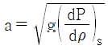
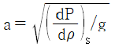
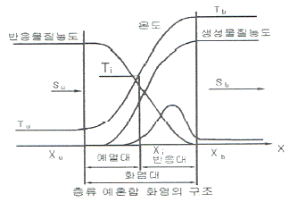
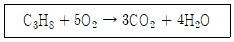
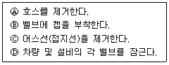

가스기사 (2020-08-22 기출문제)
1과목: 가스유체역학
1. 다음 중 포텐셜 흐름(potential flow)이 될 수 있는 것은?
- 고체 벽에 인접한 유체층에서의 흐름
- 회전 흐름
- 마찰이 없는 흐름
- 파이프내 완전발달 유동
(정답률: 62%)

2. 100℃, 2기압의 어떤 이상기체의 밀도는 200℃, 1기압일 때의 몇 배인가?
- 0.39
- 1
- 2
- 2.54
(정답률: 52%)
3. 다음 중 동점성 계수의 단위를 옳게 나타낸 것은?
- kg/m2
- kg/m·s
- m2/s
- m2/kg
(정답률: 63%)
4. 베르누이 방정식을 실제 유체에 적용할 때 보정해 주기 위해 도입하는 항이 아닌 것은?
- Wp(펌프일)
- hf(마찰손실)
- △P(압력차)
- Wt(터빈일)
(정답률: 70%)
5. 중량 10000kgf의 비행기가 270km/h의 속도로 수평 비행할 때 동력은? (단, 양력(L)과 항력(D)의 비 L/D=5 이다.)
- 1400 PS
- 2000 PS
- 2600 PS
- 3000 PS
(정답률: 63%)
6. 비중 0.8, 점도 2Poise 인 기름에 대해 내경 42mm인 관에서의 유동이 층류일 때 최대 가능 속도는 몇 m/s인가? (단, 임계레이놀즈수 = 2100 이다.)
- 12.5
- 14.5
- 19.8
- 23.5
(정답률: 45%)
7. 물이 평균속도 4.5m/s로 안지름 100mm 인 관을 흐르고 있다. 이 관의 길이 20m에서 손실된 헤드를 실험적으로 측정하였더니 4.8m 이었다. 관 마찰계수는?
- 0.0116
- 0.0232
- 0.0464
- 0.2280
(정답률: 67%)
8. 압축성 유체가 축소-확대 노즐의 확대부에서 초음속으로 흐를 때, 다음 중 확대부에서 감소하는 것을 옳게 나타낸 것은? (단, 이상기체의 등엔트로피 흐름이라고 가정한다.)
- 속도, 온도
- 속도, 밀도
- 압력, 속도
- 압력, 밀도
(정답률: 73%)
9. 유체의 흐름에서 유선이랑 무엇인가?
- 유체흐름의 모든 점에서 접선 방향이 그 점의 속도방향과 일치하는 연속적인 선
- 유체흐름의 모든 점에서 속도벡터에 평행하지 않는 선
- 유체흐름의 모든 점에서 속도벡터에 수직한 선
- 유체흐름의 모든 점에서 유동단면의 중심을 연결한 선
(정답률: 75%)
10. 비중이 0.9인 액체가 탱크에 있다. 이 때 나타난 압력은 절대압으로 2kgf/cm2이다. 이것을 수두(Head)로 환산하며 몇 m 인가?
- 22.2
- 18
- 15
- 12.5
(정답률: 51%)
11. 다음 압축성 흐름 중 정체온도과 변할 수 있는 것은?
- 등엔트로피 팽창과정인 경우
- 단면이 일정한 도관에서 단열 마찰흐름인 경우
- 단면이 일정한 도관에서 등온 마칠흐름인 경우
- 수직 충격파 전후 유동의 경우
(정답률: 49%)
12. 기체 수송 장치 중 일반적으로 상승압력이 가장 높은 것은?
- 팬
- 송풍기
- 압축기
- 진공펌프
(정답률: 83%)
13. 완전 난류구역에 있는 거친 관에서의 관마찰 계수는?
- 레이놀즈 수와 상대조도의 함수이다.
- 상대조도의 함수이다.
- 레이놀즈 수의 함수이다.
- 레인로즈 수, 상대조도 모두와 무관하다.
(정답률: 44%)
14. Hagen-Poiseuille 식이 적용되는 관내 층류 유동에서 최대속도 Vmax = 6cm/s 일 때 평균속도 Vavg는 몇 cm/s 인가?
- 2
- 3
- 4
- 5
(정답률: 75%)
15. 전양정 30m, 송출량 7.5m3/min, 펌프의 효율 0.8인 펌프의 수동력은 약 몇 kW 인가? (단, 물의 밀도는 1000kg/m3 이다.)
- 29.4
- 36.8
- 42.8
- 46.8
(정답률: 47%)
16. 운동 부분과 고정 부분이 밀착되어 있어서 배출공간엣부터 흡입공간으로의 역류가 최소화되며, 경질 윤활유와 같은 유체수송에 적합하고 배출압력을 200atm 이상 얻을 수 있는 펌프는?
- 왕복펌프
- 회전펌프
- 원심펌프
- 격막펌프
(정답률: 52%)
17. 30cmHg인 진공압력은 절대압력으로 몇 kgf/cm2인가? (단, 대기압은 표준대기압이다.)
- 0.160
- 0.545
- 0.625
- 0.840
(정답률: 58%)
18. 수직 충격파가 발생할대 나타나는 현상으로 옳은 것은?
- 마하수가 감소하고 압력과 엔트로피도 감소한다.
- 마하수가 감소하고 압력과 엔트로피는 증가한다.
- 마하수가 증가하고 압력과 엔트로피는 감소한다.
- 마하숙 증가하고 압력과 엔트로피도 증가한다.
(정답률: 70%)
19. 정적비열이 1000J/kg·K이고, 정압비열이 1200J/kg·K인 이상기체가 압력 200kPa에서 등엔프로피 과정으로 압력이 400kPa 로 바뀐다면, 바뀐 후의 밀도는 원래 밀도의 몇 배가 되는가?
- 1.41
- 1.64
- 1.78
- 2
(정답률: 45%)
20. 다음 중 음속(Sonic Velocity) a의 정의는? (단, g : 중력가속도, ρ : 밀도, P : 압력, s : 엔트로피이다.)




(정답률: 58%)
2과목: 연소공학
21. 체적이 2m3인 일정 용기 안에서 압력 200kPa 온도 0℃의 공기가 들어 있다. 이 공기를 40℃ 까지 가열하는데 필요한 열량은 약 몇 kJ 인가? (단, 공기의 R은 287 J/kg·K 이고, Cv는 718 J/kg·K 이다.)
- 47
- 147
- 247
- 347
(정답률: 45%)
22. 이론 연소가스량을 올바르게 설명한 것은?
- 단위량의 연료를 포함한 이론 혼합기가 완전 반응을 하였을 때 발생하는 산소량
- 단위량의 연료를 포함한 이론 혼합기가 불완전 반응을 하였을 때 발생하는 산소량
- 단위량의 연료를 포함한 이론 혼합기가 완전 반응을 하였을 때 발생하는 연소가스량
- 단위량의 연료를 포함한 이론 혼합기가 불완전 반응을 하였을 때 발생하는 연소가스량
(정답률: 76%)
23. 연소에 대한 설명 중 옳지 않은 것은?
- 연료가 한번 착화하면 고온으로 되어 빠른 속도로 연소한다.
- 환원반응이란 공기의 과잉 상태에서 생기는 것으로 이때의 화염을 환원염이라 한다.
- 고체, 액체 연료는 고온의 가스분위기 중에서 먼저 가스화가 일어난다.
- 연소에 있어서는 산화 반응 뿐만 아니라 열분해 반응도 일어난다.
(정답률: 72%)
24. 공기 1kg이 100℃인 상태에서 일정 체적하에서 300℃의 상태로 변했을 때 엔트로피의 변화량은 약 몇 J/kg·K 인가? (단, 공기의 Cp는 717 J/kg·K 이다.)(문제 오류로 가답안 발표시 3번으로 발표되었지만 확정답안 발표시 전항 정답 처리 되었습니다. 여기서는 가답안인 3번을 누르면 정답 처리 됩니다.)
- 108
- 208
- 308
- 408
(정답률: 61%)
25. 혼합기체의 연소범위가 완전히 없어져 버리는 첨가기체의 농도를 피크농도라 하는데 이에 대한 설명으로 잘못된 것은?
- 질소(N2)의 피크농도는 약 37 vol% 이다.
- 이산화탄소(CO2)의 피크농도는 약 23 vol%이다.
- 피크농도는 비열이 작을수록 작아진다.
- 피크농도는 열전달율이 클수록 작아진다.
(정답률: 58%)
26. 연소기에서 발생할 수 있는 역화를 방지하는 방법에 대한 설명 중 옳지 않은 것은?
- 연료분출구를 적게 한다.
- 버너의 온도를 높게 유지한다.
- 연료의 분출속도를 크게 한다.
- 1차 공기를 착화범위보다 적게 한다.
(정답률: 59%)
27. 그림은 층류예혼합화염의 구조도이다. 온도곡선의 변곡점인 Ti를 무엇이라 하는가?

- 착화온도
- 반전온도
- 화염평균온도
- 예혼합화염온도
(정답률: 60%)
28. 반응기 속에 1kg의 기체가 있고 기체를 반응기 속에 압축시키는데 1500kgf·m의 일을 하였다. 이 때 5kcal의 열량이 용기 밖으로 방출했다면 기체 1kg당 내부에너지 변화량은 약 몇 kcal 인가?
- 1.3
- 1.5
- 1.7
- 1.9
(정답률: 42%)
29. Flash fire에 대한 설명으로 옳은 것은?
- 느린 폭연으로 중대하 과압이 발생하지 않는 가스운에서 발생한다.
- 고압의 증기압 물질을 가진 용기가 고장으로 인해 액체의 flashing에 의해 발생된다.
- 누출된 물질이 연료라면 BLEVE는 매우 큰 화구가 뒤따른다.
- Flash fire는 공정지역 또는 offshore 모듈에서는 발생할 수 없다.
(정답률: 46%)
30. 중유의 경우 저발열량과 고발열량의 차이는 중유 1kg당 얼마나 되는가? (단, h : 중유 1kg당 함유된 수소의 중량(kg), W : 중유 1kg당 함유된 수분의 중량(kg)이다.)
- 600(9h+W)
- 600(9W+h)
- 539(9h+W)
- 539(9W+h)
(정답률: 61%)
31. 효율이 가장 좋은 사이클로서 다른 기관의 효율을 비교하는데 표준이 되는 사이클은?
- 재열사이클
- 재상사이클
- 냉동사이클
- 카르노사이클
(정답률: 82%)
32. 다음 가스 중 연소의 상한과 하한의 범위가 가장 넓은 것은?
- 산화에틸렌
- 수소
- 일산화탄소
- 암모니아
(정답률: 65%)
33. 층류예혼합화염과 비교한 난류예혼합하염의 특징에 대한 설명으로 옳은 것은?
- 화염의 두께가 얇다.
- 화염의 밝기가 어둡다.
- 연소 속도가 현저하게 늦다.
- 화염의 배후에 다량의 미연소분이 존재한다.
(정답률: 71%)
34. 프로판(C3H8)의 연소반응식은 다음과 같다. 프로판(C3H8)의 화학양론계수는?

- 1
- 1/5
- 6/7
- -1
(정답률: 69%)
35. 100kPa, 20℃ 상태인 배기가스 0.3m3을 분석한 결과 N2 70%, CO2 15%, O2 11%, CO 4%의 체적률을 얻었을 때 이 혼합가스를 150℃인 상태로 정적가열할 때 필요한 열전달량은 약 몇 kJ 인가? (단, N2, CO2, O2, CO의 정적비열[kJ/kg·K]은 각각 0.7448, 0.6529, 0.6618, 0.7445 이다.)
- 35
- 39
- 41
- 43
(정답률: 22%)
36. 연소온도를 높이는 방법이 아닌 것은?
- 발열량이 높은 연료사용
- 완전연소
- 연소속도를 천천히 할 것
- 연료 또는 공기를 예열
(정답률: 73%)
37. 미분탄 연소의 특징에 대한 설명으로 틀린 것은?
- 가스화 속도가 빠르고 연소실의 공간을 유효하게 이용할 수 있다.
- 화격자연소보다 낮은 공기비로써 높은 연소효율을 얻을 수 있다.
- 명료한 화염이 형성되지 않고 화염이 연소실 전체에 퍼진다.
- 연료완료시간은 표면연소속도에 의해 결정된다.
(정답률: 40%)
38. 탄갱(炭坑)에서 주로 발생하는 폭발사고의 형태는?
- 분진폭발
- 증기폭발
- 분해폭발
- 혼합위험에 의한 폭발
(정답률: 80%)
39. 기체연료의 연소특성에 대해 바르게 설명한 것은?
- 예혼합연소는 미리 공기와 연료가 충분히 혼합된 상태에서 연소하므로 별도의 확산과정이 필요하지 않다.
- 확산연소는 예혼합연소에 비해 조작이 상대적으로 어렵다.
- 확산연소의 역화 위험성은 예혼합연소보다 크다.
- 가연성 기체와 산화제의 확산에 의해 화염을 유지하는 것을 예혼합연소라 한다.
(정답률: 60%)
40. 프로판과 부탄의 체적비가 40:60인 혼합가스 10m3를 완전 연소하는데 필요한 이론공기량은 약 몇 m3인가? (단, 공기의 체적비는 산소:질소 = 21:79 이다.)
- 96
- 181
- 206
- 281
(정답률: 39%)
3과목: 가스설비
41. 이상적인 냉동사이클의 기본 사이클은?
- 카르노 사이클
- 랭킨 사이클
- 역카르노 사이클
- 브레이튼 사이클
(정답률: 65%)
42. 고압가스시설에서 전기방식시설의 유지관리를 위하여 T/B를 반드시 설치해야 하는 곳이 아닌 것은?
- 강재보호관 부분의 배관과 강재보호관
- 배관과 철근콘크리트 구조물사이
- 다른 금속구조물과 근접교차부분
- 직류전철 횡단부 주위
(정답률: 53%)
43. LP가스 탱크로리에서 하역작업 종류 후 처리할 작업순서로 가장 옳은 것은?

- Ⓓ→Ⓐ→Ⓑ→Ⓒ
- Ⓓ→Ⓐ→Ⓒ→Ⓑ
- Ⓐ→Ⓑ→Ⓒ→Ⓓ
- Ⓒ→Ⓐ→Ⓑ→Ⓓ
(정답률: 75%)
44. 불꽃의 주위, 특히 불꽃의 기저부에 대한 공기의 움직임이 세지면 불꽃이 노즐에 정착하지 않고 떨어지게 되어 꺼지는 현상은?
- 블로우 오프(blow-off)
- 백 파이어(back-fire)
- 리프트(lift)
- 불완전 연소
(정답률: 69%)
45. 벽에 설치하여 가스를 사용할 때에만 퀵 커플러로 연결하여 난로와 같은 이동식 연소기에 사용할 수 있는 구조로 되어 있는 콕은?
- 호스콕
- 상자콕
- 휴즈콕
- 노즐콕
(정답률: 59%)
46. 회전펌프의 특징에 대한 설명으로 옳지 않은 것은?
- 회전운동을 하는 회전체와 케이싱으로 구성된다.
- 점성이 큰 액체의 이송에 적합하다.
- 토출액의 맥동이 다른 펌프보다 크다.
- 고압유체 펌프로 널리 사용된다.
(정답률: 54%)
47. 수소취성에 대한 설명으로 가장 옳은 것은?
- 탄소강은 수소취성을 일으키지 않는다.
- 수소는 환원성가스로 상온에서도 부식을 일으킨다.
- 수소는 고온, 고압하에서 철과 화합하며 이것이 수소취성의 원인이 된다.
- 수소는 고온, 고압에서 강중의 탄소와 화합하여 메탄을 생성하여 이것이 수소취성의 원인이 된다.
(정답률: 59%)
48. 도시가스 지하매설에 사용되는 배관으로 가장 적합한 것은?
- 폴리에틸렌 피복강관
- 압력배관용 탄소강관
- 연료가스 배관용 탄소강관
- 배관용 아크용접 탄소강관
(정답률: 65%)
49. 다음 초저온액화가스 중 액체 1L가 기화되었을 때 부피가 가장 큰 가스는?
- 산소
- 질소
- 헬륨
- 이산화탄소
(정답률: 46%)
50. 펌프 임펠러의 현상을 나타내는 척도인 비속도(비교회전도)의 단위는?
- rpm·m3/min·m
- rpm·m3/min
- rpm·kgf/min·m
- rpm·kgf/min
(정답률: 51%)
51. 입구에 사용측과 예비측의 용기가 각각 접속되어 있어 사용측의 압력이 낮아지는 경우 예비측 용기로부터 가스가 공급되는 조정기는?
- 자동교체식 조정기
- 1단식 감압식 조정기
- 1단식 감압용 저압 조정기
- 1단식 감압용 준저압 조정기
(정답률: 63%)
52. 단열을 한 배관 중에 작은 구멍을 내고 이 관에 압력이 있는 유체를 흐르게 하면 유체가 작은 구멍을 통할 때 유체의 압력이 하강함과 동시에 온도가 변화하는 현상을 무엇이라고 하는가?
- 토리첼리 효과
- 줄-톰슨 효과
- 베르누이 효과
- 도플러 효과
(정답률: 68%)
53. 진한 황산은 어느 가스 압축기의 윤활류로 사용되는가?
- 산소
- 아세틸렌
- 염소
- 수소
(정답률: 53%)
54. 부탄가스 30kg을 충전하기 위해 필요한 용기의 최소 부피는 약 몇 L 인가? (단, 충전상수는 2.⑤이고, 액비중은 0.5이다.)
- 60
- 61.5
- 120
- 123
(정답률: 50%)
55. 5L들이 용기에 9기압의 기체가 들어있다. 또 다른 10L들이 용기에 6기압의 같은 기체가 들어있다. 이 용기를 연결하여 양쪽의 기체가 서로 섞여 평형에 도달하였을 때 기체의 압력은 약 몇 기압이 되는가?
- 6.5기압
- 7.0기압
- 7.5기압
- 8.0기압
(정답률: 57%)
56. 일반 도시가스 공급시설의 최고 사용압력이 고압, 중압인 가스홀더에 대한 안전조치 사항이 아닌 것은?
- 가스방출장치를 설치한다.
- 맨홀이나 검사구를 설치한다.
- 응축액을 외부로 뽑을 수 있는 장치를 설치한다.
- 관의 입구를 출구에는 온도나 압력의 변화에 따른 신축을 흡수하는 조치를 한다.
(정답률: 48%)
57. 용기밸브의 구성이 아닌 것은?
- 스템
- O링
- 퓨즈
- 밸브시트
(정답률: 63%)
58. “응력(stress)과 스트레인(strain)은 변형이 적은 범위에서는 비례관계에 있다.”는 법칙은?
- Euler의 법칙
- Wein의 법칙
- Hooke의 법칙
- Trouton의 법칙
(정답률: 62%)
59. 액셜 플로우(Axial Flow)식 정압기에 특징에 대한 설명으로 틀린 것은?
- 변칙 unloading 형이다.
- 정특성, 동특성 모두 좋다.
- 저 차압이 될수록 특성이 좋다.
- 아주 간단한 작동방식을 가지고 있다.
(정답률: 46%)
60. 압력조정기의 구성부품이 아닌 것은?
- 다이어프램
- 스프링
- 밸브
- 피스톤
(정답률: 60%)
4과목: 가스안전관리
61. 고압가스안전관리법의 적용을 받는 고압가스의 종류 및 범위에 대한 내용 중 옳은 것은? (단, 압력은 게이지압력이다.)
- 상용의 온도에서 압력이 1MPa 이상이 되는 압축가스로서 실제로 그 압력이 MPa 이상이 되는 것 또는 섭씨 25도의 온도에서 압력이 1MPa 이상이 되는 압축가스
- 섭씨 35도의 온도에서 압력이 1Pa을 초과하는 아세틸렌가스
- 상용의 온도에서 압력이 0.1MPa 이상이 되는 액화가스로서 실제로 그 압력이 0.1MPa 이상이 되는 것 또는 압력이 0.1MPa이 되는 액화가스
- 섭씨 35도의 온도에서 압력이 0Pa을 초과하는 액화시안화수소
(정답률: 42%)
62. 도시가스 사용시설에 사용하는 배관재료 선정기준에 대한 설명으로 틀린 것은?
- 배관의 재료는 배관내의 가스흐름이 원활한 것으로 한다.
- 배관의 재료는 내부의 가스압력과 외부로부터의 하중 및 충격하중 등에 견디는 강도를 갖는 것으로 한다.
- 배관의 재료는 배관의 접합이 용이하고 가스의 누출을 방지할 수 있는 것으로 한다.
- 배관의 재료는 절단, 가공을 어렵게 하여 임의로 고칠 수 없도록 한다.
(정답률: 77%)
63. LPG 저장설비를 설치 시 실시하는 지반조사에 대한 설명으로 틀린 것은?
- 1차 지반조사방법은 이너팅을 실시하는 것을 원칙으로 한다.
- 표준관입시험은 N값을 구하는 방법이다.
- 배인(Vane)시험은 최대 토크 또는 모멘트를 구하는 방법이다.
- 평판재하시험은 항복하중 및 극한하중을 구하는 방법이다.
(정답률: 63%)
64. 정전기를 억제하기 위한 방법이 아닌 것은?
- 습도를 높여준다.
- 접지(Grounging)한다.
- 접촉 전위차가 큰 재료를 선택한다.
- 정전기의 중화 및 전기가 잘 통하는 물질을 사용한다.
(정답률: 70%)
65. 품질유지 대상인 고압가스의 종류에 해당하지 않는 것은?
- 이소부탄
- 암모니아
- 프로판
- 연료전지용으로 사용되는 수소가스
(정답률: 49%)
66. 다음 가스가 공기 중에 누출되고 있다고 할 경우 가장 빨리 폭발할 수 있는 가스는? (단, 점화원 및 주위환경 등 모든 조건은 동일하다고 가정한다.)
- CH4
- C3H8
- C4H10
- H2
(정답률: 49%)
67. 안전관리상 동일 차량으로 적재 운반할 수 없는 것은?
- 질소와 수소
- 산소와 암모니아
- 염소와 아세틸렌
- LPG와 염소
(정답률: 70%)
68. 가연성 가스설비의 재치환 작업 시 공기로 재치환 한 결과를 산소측정기로 측정하여 산소의 농도가 몇 % 가 확인될 때까지 공기로 반복하여 치환하여야 하는가?
- 18~22%
- 20~28%
- 22~35%
- 23~42%
(정답률: 74%)
69. 액화석유가스 저장시설에서 긴급차단장치의 차단조작기구는 해당 저장탱크로부터 몇 m 이상 떨어진 곳에 설치하여야 하는가?
- 2m
- 3m
- 5m
- 8m
(정답률: 57%)
70. 저장탱크에 의한 액화석유가스(LPG)저장소의 저장설비는 그 외면으로부터 화기를 취급하는 장소까지 몇 m 이상의 우회거리를 두어야 하는가?
- 2m
- 5m
- 8m
- 10m
(정답률: 56%)
71. 지하에 설치하는 액화석유가스 저장탱크의 재료인 레디믹스트 콘크리트의 규격으로 틀린 것은?
- 굵은 골재의 최대치수 : 25mm
- 설계강도 : 21MPa 이상
- 슬럼프(slump) : 120~150mm
- 물-결합재비 : 83% 이하
(정답률: 60%)
72. 수소의 일반적 성질에 대한 설명으로 틀린 것은?
- 열에 대하여 안정하다.
- 가스 중 비중이 가장 작다.
- 무색, 무미, 무취의 기체이다.
- 가벼워서 기체 중 확산속도가 가장 느리다.
(정답률: 76%)
73. 고압가스 특정제조시설에서 분출원인이 화재인 경우 안전밸브의 축적압력은 안전밸브의 수량과 관계없이 최고허용압력의 몇 % 이하로 하여야 하는가?
- 1⑤%
- 110%
- 116%
- 121%
(정답률: 42%)
74. 고압가스를 차량에 적재하여 운반하는 때에 운반책임자를 동승시키지 않아도 되는 것은?
- 수소 400m3
- 산소 400m3
- 액화석유가스 3500kg
- 암모니아 3500kg
(정답률: 68%)
75. 니켈(Ni) 금속을 포함하고 있는 촉매를 사용하는 공정에서 주로 발생할 수 있는 맹독성 가스는?
- 산화니켈(NiO)
- 니켈카르보닐[Ni(CO)4]
- 니켈클로라이드(NiCl2)
- 니켈염(NIckel salt)
(정답률: 72%)
76. 특정설비인 고압가스용 기화장치 제조설비에서 반드시 갖추지 않아도 되는 제조설비는?
- 성형설비
- 단조설비
- 용접설비
- 제관설비
(정답률: 53%)
77. 고압가스 충전용기를 운반할 때의 기준으로 틀린 것은?
- 충전용기와 등유는 동일 차량에 적재하여 운반하지 않는다.
- 충전량이 30kg 이하이고, 용기 수가 2개를 초과하지 않는 경우에는 오토바이에 적재하여 운반할 수 있다.
- 충전용기 운반차량은 “위험고압가스”라는 경계표시를 하여야 한다.
- 충전용기 운반차량에는 운반기준 위반행위를 신고할 수 있도록 안내물을 부착하여야 한다.
(정답률: 74%)
78. 내용적이 3000L인 용기에 액화암모니아를 저장하려고 한다. 용기의 저장능력은 약 몇 kg 인가? (단, 액화 암모니아 정수는 1.86 이다.)
- 1613
- 2324
- 2796
- 5580
(정답률: 53%)
79. 산화에틸렌의 저장탱크에는 45℃에서 그 내부가스의 압력이 몇 MPa 이상이 되도록 질소가스를 충전하여야 하는가?
- 0.1
- 0.3
- 0.4
- 1
(정답률: 50%)
80. 고압가스 특정제조시설에서 하천 또는 수로를 횡단하여 배관을 매설할 경우 2중관으로 하여야 하는 가스는?
- 염소
- 암모니아
- 염화메탄
- 산화에틸렌
(정답률: 56%)
5과목: 가스계측기기
81. 접촉식 온도계에 대한 설명으로 틀린 것은?
- 열전대 온도계는 열전대로서 서미스터를 사용하여 온도를 측정한다.
- 저항 온도계의 경우 측정회로로서 일반적으로 휘스톤브리지가 채택되고 있다.
- 압력식 온도계는 감온부, 도압부, 감압부로 구성되어 있다.
- 봉상온도계에서 측정오차를 최소화하려면 가급적 온도계 전체를 측정하는 물체에 접촉시키는 것이 좋다.
(정답률: 42%)
82. 계량계측기기는 정확, 정밀하여야 한다. 이를 확보하기 위한 제도 중 계량법상 강제 규정이 아닌 것은?
- 검정
- 정기검사
- 수시검사
- 비교검사
(정답률: 65%)
83. 탄화수소에 대한 감도는 좋으나 H2O, CO2에 대하여는 감응하지 않는 검출기는?
- 불꽃이온화검출기(FID)
- 열전도도검출기(TCD)
- 전자포획검출기(ECD)
- 불꽃광도법검출기(FPD)
(정답률: 73%)
84. 가스 성분에 대하여 일반적으로 적용하는 화학분석법이 옳게 짝지어진 것은?
- 황화수소 - 요오도적정법
- 수분 - 중화적정법
- 암모니아 – 기체 크로마토그래피법
- 나프탈렌 – 흡수평량법
(정답률: 62%)
85. 다음 계측기기와 관련된 내용을 짝지은 것 중 틀린 것은?
- 열전대 온도계 - 제백효과
- 모발 습도계 - 히스테리시스
- 차압식 유량계 – 베르누이식의 적용
- 초음파 유량계 – 램버트 비어의 법칙
(정답률: 61%)
86. 시험용 미터인 루트 가스미터로 측정한 유량이 5m3/h 이다. 기준용 가스미터로 측정한 유량이 4.75 m3/h 이라면 이 가스미터의 기차는 약 몇 % 인가?
- 2.5%
- 3%
- 5%
- 10%
(정답률: 61%)
87. 계측기의 선정 시 고려사항으로 가장 거리가 먼 것은?
- 정확도와 정밀도
- 감도
- 견고성 및 내구성
- 지시방식
(정답률: 77%)
88. 적외선 가스분석기에서 분석 가능한 기체는?
- Cl2
- SO2
- N2
- O2
(정답률: 67%)
89. 게겔(Gockel)법에 의한 저급탄화수소 분석 시 분석가스와 흡수액이 옳게 짝지어진 것은?
- 프로필렌 - 황산
- 에틸렌 – 옥소수은 칼륨용액
- 아세틸렌 – 알칼리성 피로갈롤 용액
- 이산화탄소 – 암모니아성 염화제1구리 용액
(정답률: 42%)
90. 액화산소 등을 저장하는 초저온 저장탱크의 액면 측정용으로 가장 적합한 액면계는?
- 직관식
- 부자식
- 차압식
- 기포식
(정답률: 52%)
91. 막식 가스미터의 부동현상에 대한 설명으로 가장 옳은 것은?
- 가스가 누출되고 있는 고장이다.
- 가스가 미터를 통과하지 못하는 고장이다.
- 가스가 미터를 통과하지만 지침이 움직이지 않는 고장이다.
- 가스가 통과할 때 미터가 이상 음을 내는 고장이다.
(정답률: 76%)
92. 건조공기 120kg에 6kg의 수증기를 포함한 습공기가 있다. 온도가 49℃이고, 전체 압력이 750 mmHg 일 때의 비교습도는 약 얼마인가? (단, 49℃에서의 포화수증기압은 89 mmHg이고 공기의 분자량은 29로 한다.)
- 30%
- 40%
- 50%
- 60%
(정답률: 27%)
93. 두 금속의 열팽창계수의 차이를 이용한 온도계는?
- 서미스터 온도계
- 베크만 온도계
- 바이메탈 온도계
- 광고 온도계
(정답률: 68%)
94. 소형가스미터의 경우 가스사용량이 가스미터 용량의 몇 % 정도가 되도록 선정하는 것이 가장 바람직한가?
- 40%
- 60%
- 80%
- 100%
(정답률: 48%)
95. 액주식 압력계에 해당하는 것은?
- 벨로우즈 압력계
- 분동식 압력계
- 침종식 압력계
- 링밸런스식 압력계
(정답률: 39%)
96. 기체 크로마토그래피를 통하여 가장 먼저 피크가 나타나는 물질은?
- 메탄
- 에탄
- 이소 부탄
- 노르말 부탄
(정답률: 66%)
97. 기체 크로마토그래피에 의해 가스의 조성을 알고 있을 때에는 계산에 의해서 그 비중을 알 수 있다. 이 때 비중계산과의 관계가 가장 먼 인자는?
- 성분의 함량비
- 분자량
- 수분
- 증발온도
(정답률: 54%)
98. 도시가스사용시설에서 최고사용압력이 0.1MPa 미만인 도시가스 공급관을 설치하고, 내용적을 계산하였더니 8m3이었다. 전기식다이어프램형 압력계로 기밀시험을 할 경우 최소 유지시간은 얼마인가?
- 4분
- 10분
- 24분
- 40분
(정답률: 42%)
99. 가스공급용 저장탱크의 가스저장량을 일정하게 유지하기 위하여 탱크내부의 압력을 측정하고 측정된 압력과 설정압력(목표압력)을 비교하여 탱크에 유입되는 가스의 양을 조절하는 자동제어계가 있다. 탱크내부의 압력을 측정하는 동작은 다음 중 어디에 해당하는가?
- 비교
- 판단
- 조작
- 검출
(정답률: 64%)
100. 열전대 온도계의 특징에 대한 설명으로 틀린 것은?
- 원격 측정이 가능하다.
- 고온의 측정에 적합하다.
- 보상도선에 의한 오차가 발생할 수 있다.
- 장기간 사용하여도 재질이 변하지 않는다.
(정답률: 66%)